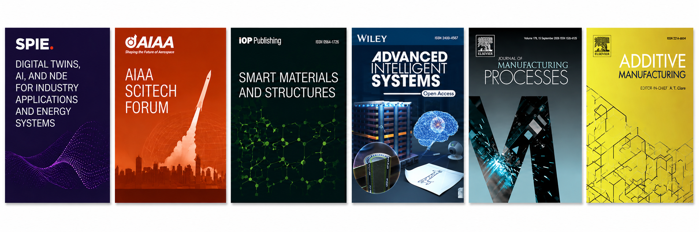

2026
Roadmap on artificial intelligence-augmented additive manufacturing
Advanced Intelligent Systems


Research Output
Representative work in additive manufacturing, monitoring, AI, and structural validation.
Advanced Intelligent Systems
Smart Materials and Structures
Additive Manufacturing
Additive Manufacturing
Journal of Manufacturing Processes
Additive Manufacturing
AIAA SCITECH 2024 Forum
SPIE — Multifunctional Materials and Structures II
SPIE
SPIE — Thermosense
SPIE — Digital Twins, AI, and NDE for Industry Applications and Energy Systems
SPIE — Active and Passive Smart Structures and Integrated Systems XIX
IMAC-XLI
SPIE
SPIE